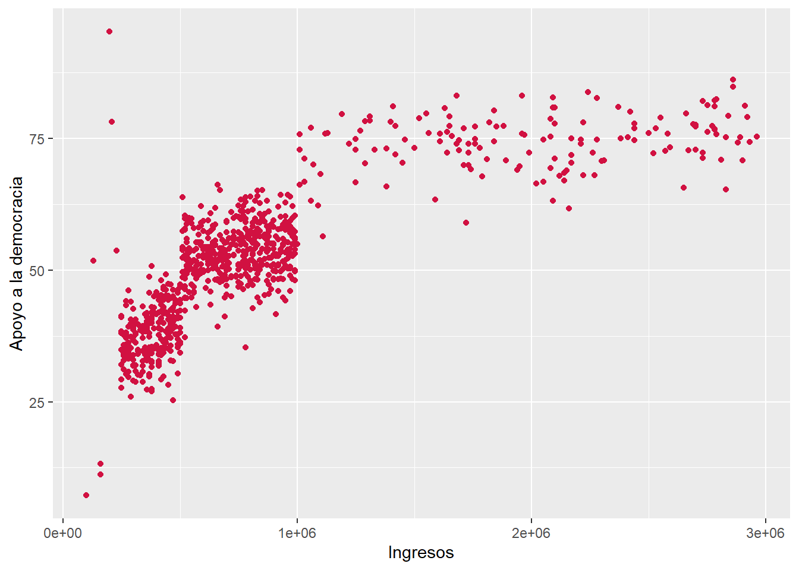
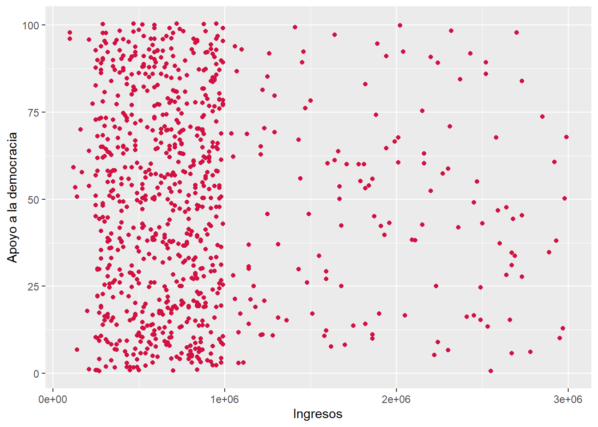

# librerías
pacman::p_load(dplyr, sjPlot, sjmisc)Pauta Prueba 2
Librerías y datos
Pregunta 1 ¿En qué medida se relacionan los ingresos (en pesos) de las personas con sus niveles de apoyo a la democracia?
1.1 Estime la correlación entre ambas variables utilizando R y genere un diagrama de dispersión (nube de puntos/scatterplot). Corte y pegue el código en el recuadro de abajo. (1p)
- 0.5 por código de correlación
- 0.5 por gráfico de dispersión
Forma A
cor.test(dataset1$ingresos, dataset1$apoyo_dem, complete.obs = TRUE, method = "pearson")
Pearson's product-moment correlation
data: dataset1$ingresos and dataset1$apoyo_dem
t = 39.93, df = 839, p-value < 2.2e-16
alternative hypothesis: true correlation is not equal to 0
95 percent confidence interval:
0.7847979 0.8315542
sample estimates:
cor
0.8094554 sjPlot::plot_scatter(data = dataset1, x = ingresos, y = apoyo_dem)
Forma B
cor.test(dataset2$ingresos, dataset2$apoyo_dem, complete.obs = TRUE, method = "pearson")
Pearson's product-moment correlation
data: dataset2$ingresos and dataset2$apoyo_dem
t = 1.215, df = 838, p-value = 0.2247
alternative hypothesis: true correlation is not equal to 0
95 percent confidence interval:
-0.02578178 0.10926704
sample estimates:
cor
0.04193417 sjPlot::plot_scatter(data = dataset2, x = ingresos, y = apoyo_dem)Forma C
cor.test(dataset3$ingresos, dataset3$apoyo_dem, complete.obs = TRUE, method = "pearson")
Pearson's product-moment correlation
data: dataset3$ingresos and dataset3$apoyo_dem
t = -0.88933, df = 842, p-value = 0.3741
alternative hypothesis: true correlation is not equal to 0
95 percent confidence interval:
-0.09791381 0.03692461
sample estimates:
cor
-0.03063398 sjPlot::plot_scatter(data = dataset3, x = ingresos, y = apoyo_dem)
Forma D
cor.test(dataset4$ingresos, dataset4$apoyo_dem, complete.obs = TRUE, method = "pearson")
Pearson's product-moment correlation
data: dataset4$ingresos and dataset4$apoyo_dem
t = 37.907, df = 838, p-value < 2.2e-16
alternative hypothesis: true correlation is not equal to 0
95 percent confidence interval:
0.7684251 0.8184034
sample estimates:
cor
0.7947577 sjPlot::plot_scatter(data = dataset4, x = ingresos, y = apoyo_dem)1.2 Justifique la elección del coeficiente de correlación seleccionado e interprete el resultado considerando inferencia estadística, magnitud y sentido del efecto. (3p)
1pt por coeficiente de correlación seleccionado
1pt por inferencia
1pt por magnitud y sentido del efecto
Forma A: Se empleó el coeficiente de correlación de Pearson debido a la naturaleza de las variables, en tanto
ingresosyapoyo_demcorresponden a variables númericas de razón. El coeficiente da cuenta de una relacion positiva y grande, siguiendo los criterios de Cohen (1988) (\(r\) = 0.80). Es decir, a medida que aumentan los ingresos de las personas, también aumentan sus niveles de apoyo_dem. La relación es estadísticamente significativa (\(p\) < 0.001), por ende es posible rechazar \(H_0\) sobre no asociación entre variables, entregando evidencia a favor de una relación entre ambas variables con un 99.9% de confianza.Forma B: Se empleó el coeficiente de correlación de Pearson debido a la naturaleza de las variables, en tanto
ingresosyapoyo_demcorresponden a variables númericas de razón. El coeficiente da cuenta de una relacion positiva y muy pequeña, siguiendo los criterios de Cohen (1988) (\(r\) = 0.04). La relación no es estadísticamente significativa (\(p\) > 0.05), por ende no es posible rechazar \(H_0\) sobre no asociación entre variables al 95% de confianza.Forma C: Se empleó el coeficiente de correlación de Pearson debido a la naturaleza de las variables, en tanto
ingresosyapoyo_demcorresponden a variables númericas de razón. El coeficiente da cuenta de una relacion negativa y muy pequeña, siguiendo los criterios de Cohen (1988) (\(r\) = -0.03). La relación no es estadísticamente significativa (\(p\) > 0.05), por ende no es posible rechazar \(H_0\) sobre no asociación entre variables al 95% de confianza.Forma D: Se empleó el coeficiente de correlación de Pearson debido a la naturaleza de las variables, en tanto
ingresosyapoyo_demcorresponden a variables númericas de razón. El coeficiente da cuenta de una relacion positiva y grande, siguiendo los criterios de Cohen (1988) (\(r\) = 0.79). Es decir, a medida que aumentan los ingresos de las personas, también aumentan sus niveles de apoyo_dem. La relación es estadísticamente significativa (p < 0.001), por ende es posible rechazar \(H_0\) sobre no asociación entre variables, entregando evidencia a favor de una relación entre ambas variables con un 99.9% de confianza.
NOTA: Si se utilizaba
ingresos_recy se señalaba que se escogía una correlación punto biserial, también se considera correcto.
Pregunta 2: ¿Cómo se relacionan el sexo, apoyo_dem y los ingresos?
2.1 Estime y reporte la matriz de correlaciones de las variables de sexo, apoyo_dem y los ingresos. Corte y pegue el código de R correspondiente (1p)
- Forma A:
cormat <- dataset1 %>%
dplyr::select(sexo, apoyo_dem, ingresos)
sjPlot::tab_corr(cormat,
na.deletion = "pairwise", # espeficicamos tratamiento NA
triangle = "lower")| Sexo | Apoyo a la democracia | Ingresos | |
| Sexo | |||
| Apoyo a la democracia | -0.037 | ||
| Ingresos | -0.030 | 0.809*** | |
| Computed correlation used pearson-method with pairwise-deletion. | |||
sjPlot::tab_corr(cormat,
na.deletion = "listwise", # espeficicamos tratamiento NA
triangle = "lower")| Sexo | Apoyo a la democracia | Ingresos | |
| Sexo | |||
| Apoyo a la democracia | -0.038 | ||
| Ingresos | -0.027 | 0.809*** | |
| Computed correlation used pearson-method with listwise-deletion. | |||
- Forma B:
cormat <- dataset2 %>%
dplyr::select(sexo, apoyo_dem, ingresos)
sjPlot::tab_corr(cormat,
na.deletion = "pairwise", # espeficicamos tratamiento NA
triangle = "lower")| Sexo | Apoyo a la democracia | Ingresos | |
| Sexo | |||
| Apoyo a la democracia | 0.059 | ||
| Ingresos | 0.837*** | 0.042 | |
| Computed correlation used pearson-method with pairwise-deletion. | |||
sjPlot::tab_corr(cormat,
na.deletion = "listwise", # espeficicamos tratamiento NA
triangle = "lower")| Sexo | Apoyo a la democracia | Ingresos | |
| Sexo | |||
| Apoyo a la democracia | 0.078* | ||
| Ingresos | 0.837*** | 0.042 | |
| Computed correlation used pearson-method with listwise-deletion. | |||
- Forma C:
cormat <- dataset3 %>%
dplyr::select(sexo, apoyo_dem, ingresos)
sjPlot::tab_corr(cormat,
na.deletion = "pairwise", # espeficicamos tratamiento NA
triangle = "lower")| Sexo | Apoyo a la democracia | Ingresos | |
| Sexo | |||
| Apoyo a la democracia | -0.029 | ||
| Ingresos | 0.041 | -0.031 | |
| Computed correlation used pearson-method with pairwise-deletion. | |||
sjPlot::tab_corr(cormat,
na.deletion = "listwise", # espeficicamos tratamiento NA
triangle = "lower")| Sexo | Apoyo a la democracia | Ingresos | |
| Sexo | |||
| Apoyo a la democracia | -0.038 | ||
| Ingresos | 0.037 | -0.031 | |
| Computed correlation used pearson-method with listwise-deletion. | |||
- Forma D:
cormat <- dataset4 %>%
dplyr::select(sexo, apoyo_dem, ingresos)
sjPlot::tab_corr(cormat,
na.deletion = "pairwise", # espeficicamos tratamiento NA
triangle = "lower")| Sexo | Apoyo a la democracia | Ingresos | |
| Sexo | |||
| Apoyo a la democracia | 0.523*** | ||
| Ingresos | 0.831*** | 0.795*** | |
| Computed correlation used pearson-method with pairwise-deletion. | |||
sjPlot::tab_corr(cormat,
na.deletion = "listwise", # espeficicamos tratamiento NA
triangle = "lower")| Sexo | Apoyo a la democracia | Ingresos | |
| Sexo | |||
| Apoyo a la democracia | 0.517*** | ||
| Ingresos | 0.830*** | 0.795*** | |
| Computed correlation used pearson-method with listwise-deletion. | |||
2.2a ¿Qué correlaciones de la matriz son estadísticamente significativas?¿Con qué nivel de confianza se puede rechazar la hipótesis nula en estos casos? (1p)
Forma A: (0,5 por cada correlación significativa)
- Pairwise: La correlación de Pearson entre ingresos y apoyo_dem es positiva y estadísticamente significativa (\(r\) = 0.809, \(p\) < 0.001). La hipótesis nula se puede rechazar con un 99.9% de confianza.
- Listwise: La correlación de Pearson entre ingresos y apoyo_dem es positiva y estadísticamente significativa (\(r\) = 0.809, \(p\) < 0.001). La hipótesis nula se puede rechazar con un 99.9% de confianza.
Forma B: (1pt por correlación significativa en pairwise, 0.5 por c/u en listwise)
- Pairwise: La correlación de Pearson entre ingresos y sexo es positiva y estadísticamente significativa (\(r\) = 0.837, \(p\) < 0.001). La hipótesis nula se puede rechazar con un 99.9% de confianza.
- Listwise:
- La correlación de Pearson entre apoyo_dem y sexo es positiva y estadísticamente significativa (\(r\) = 0.078, \(p\) < 0.05). La hipótesis nula se puede rechazar con un 95% de confianza.
- La correlación de Pearson entre ingresos y apoyo_dem es positiva y estadísticamente significativa (\(r\) = 0.837, \(p\) < 0.05). La hipótesis nula se puede rechazar con un 95% de confianza.
Forma C: (1pt por no haber asociaciones significativas)
- Pairwise: No hay asociaciones estadísticamente significativas (\(p\) < 0.05) entre las variables. No se puede rechazar la hipótesis nula.
- Listwise: No hay asociaciones estadísticamente significativas (\(p\) < 0.05) entre las variables. No se puede rechazar la hipótesis nula.
Forma D: (1pt por las tres asociaciones significativas)
- Pairwise:
- La correlación de Pearson entre apoyo_dem y sexo es positiva y estadísticamente significativa (\(r\) = 0.523, \(p\) < 0.001). La hipótesis nula se puede rechazar con un 99.9% de confianza.
- La correlación de Pearson entre ingresos y sexo es positiva y estadísticamente significativa (\(r\) = 0.831, \(p\) < 0.001). La hipótesis nula se puede rechazar con un 99.9% de confianza.
- La correlación de Pearson entre ingresos y apoyo_dem es positiva y estadísticamente significativa (\(r\) = 0.795, \(p\) < 0.001). La hipótesis nula se puede rechazar con un 99.9% de confianza.
- Listwise:
- La correlación de Pearson entre apoyo_dem y sexo es positiva y estadísticamente significativa (\(r\) = 0.517, \(p\) < 0.001). La hipótesis nula se puede rechazar con un 99.9% de confianza.
- La correlación de Pearson entre ingresos y sexo es positiva y estadísticamente significativa (\(r\) = 0.830, \(p\) < 0.001). La hipótesis nula se puede rechazar con un 99.9% de confianza.
- La correlación de Pearson entre ingresos y apoyo_dem es positiva y estadísticamente significativa (\(r\) = 0.795, \(p\) < 0.001). La hipótesis nula se puede rechazar con un 99.9% de confianza.
- Pairwise:
2.2b ¿Qué decisión tomó sobre los casos perdidos en el cálculo de la matriz?¿Por qué? (1p)
Pairwise: Se optó por el método de eliminación de pares (pairwise) para el tratamiento de casos perdidos con el fin de mantener la mayor cantidad de casos a la hora de calcular los coeficientes de correlación.
Listwise: Se optó por el método de eliminación por lista (listwise) para el tratamiento de casos perdidos con el fin de mantener el mismo número de casos para todas las correlaciones.
bonus: Si mencionan que la variable ingresos es la que tiene gran porcentaje de NA, se le asignarán dos décimas extra en la nota final.
2.2c ¿Cómo se denomina el tipo de correlación que se calcula entre sexo e ingreso? (1p)
La correlación entre la variable dummy sexo (0=“Hombre”; 1=“Mujer”) y la variable continúa ingresos se denomina correlación punto biserial.
Si utilizan la variable de ingresos recodificada, entonces la correlación es policórica
Pregunta 3: ¿Cómo se relaciona el sexo con los ingresos?
3.1 Reporte tabla de contigencia y el cálculo de Chi2. Corte y pegue el código abajo. (1p)
1pt por el código de sjPlot::sjtab
Forma A:
pacman::p_load(sjPlot)
dataset1 %>%
sjtab(sexo,
ingresos_rec)| Sexo | Ingresos recodificado |
Total | ||
|---|---|---|---|---|
| Bajos ingresos | Medios ingresos | Altos ingresos | ||
| Hombre | 162 | 262 | 103 | 527 |
| Mujer | 92 | 180 | 51 | 323 |
| Total | 254 | 442 | 154 | 850 |
| χ2=3.292 · df=2 · Cramer's V=0.062 · p=0.193 | ||||
chisq.test(dataset1$sexo, dataset1$ingresos_rec) # adicional, ya que el Chi2 aparece en sjtab
Pearson's Chi-squared test
data: dataset1$sexo and dataset1$ingresos_rec
X-squared = 3.2921, df = 2, p-value = 0.1928- Forma B:
pacman::p_load(sjPlot)
dataset2 %>%
sjtab(sexo,
ingresos_rec)| Sexo | Ingresos recodificado |
Total | ||
|---|---|---|---|---|
| Bajos ingresos | Medios ingresos | Altos ingresos | ||
| Hombre | 268 | 428 | 75 | 771 |
| Mujer | 0 | 0 | 79 | 79 |
| Total | 268 | 428 | 154 | 850 |
| χ2=393.623 · df=2 · Cramer's V=0.681 · p=0.000 | ||||
chisq.test(dataset2$sexo, dataset2$ingresos_rec) # adicional, ya que el Chi2 aparece en sjtab
Pearson's Chi-squared test
data: dataset2$sexo and dataset2$ingresos_rec
X-squared = 393.62, df = 2, p-value < 2.2e-16- Forma C:
pacman::p_load(sjPlot)
dataset3 %>%
sjtab(sexo,
ingresos_rec)| Sexo | Ingresos recodificado |
Total | ||
|---|---|---|---|---|
| Bajos ingresos | Medios ingresos | Altos ingresos | ||
| Hombre | 157 | 290 | 88 | 535 |
| Mujer | 83 | 172 | 60 | 315 |
| Total | 240 | 462 | 148 | 850 |
| χ2=1.405 · df=2 · Cramer's V=0.041 · p=0.495 | ||||
chisq.test(dataset3$sexo, dataset3$ingresos_rec) # adicional, ya que el Chi2 aparece en sjtab
Pearson's Chi-squared test
data: dataset3$sexo and dataset3$ingresos_rec
X-squared = 1.4055, df = 2, p-value = 0.4952- Forma D:
pacman::p_load(sjPlot)
dataset4 %>%
sjtab(sexo,
ingresos_rec)| Sexo | Ingresos recodificado |
Total | ||
|---|---|---|---|---|
| Bajos ingresos | Medios ingresos | Altos ingresos | ||
| Hombre | 269 | 437 | 73 | 779 |
| Mujer | 0 | 0 | 71 | 71 |
| Total | 269 | 437 | 144 | 850 |
| χ2=379.824 · df=2 · Cramer's V=0.668 · p=0.000 | ||||
chisq.test(dataset4$sexo, dataset4$ingresos_rec) # adicional, ya que el Chi2 aparece en sjtab
Pearson's Chi-squared test
data: dataset4$sexo and dataset4$ingresos_rec
X-squared = 379.82, df = 2, p-value < 2.2e-163.2 Interprete el Chi2 en términos de inferencia y magnitud del efecto. (3p)
- Forma A: χ2=3.292 · df=2 · Cramer’s V=0.062 · p=0.193
Chi cuadrado no es estadísticamente significativo (1pt)
(p > 0.05) (1pt)
tamaño de efecto pequeño/débil según la V de Cramer (1pt)
- Forma B: χ2=393.623 · df=2 · Cramer’s V=0.681 · p=0.000
Chi cuadrado estadísticamente significativo (1pt)
(p < 0.001), 99,9% de confianza (1pt)
tamaño de efecto grande/fuerte según la V de Cramer (1pt)
- Forma C: χ2=1.405 · df=2 · Cramer’s V=0.041 · p=0.495
Chi cuadrado no es estadísticamente significativo (1pt)
(p > 0.05) (1pt)
tamaño de efecto pequeño/débil según la V de Cramer (1pt)
- Forma D: χ2=379.824 · df=2 · Cramer’s V=0.668 · p=0.000
Chi cuadrado estadísticamente significativo (1pt)
(p < 0.001), 99,9% de confianza (1pt)
tamaño de efecto grande/fuerte según la V de Cramer (1pt)
3.3 A Chi2 también se le denomina “test de diferencia”, ¿Qué es lo que se compara para hacer esta diferencia? (1p)
En el test Chi-cuadrado se comparan las frecuencias observadas en cada categoría de una tabla de contingencia con las frecuencias esperadas bajo la hipótesis nula de independencia o no asociación.
En otras palabras, se mide la diferencia entre lo que efectivamente se observa en los datos y lo que se esperaría si no existiera relación entre las variables. Cuanto mayores sean esas diferencias (ajustadas al tamaño de la muestra), mayor será el valor de χ2.